FunRock Internship
Table of Content
Internship Details
- Company: FunRock
- Role: Frontend Unity Developer
- Duration: 8 Months - Full time
About the Internship
Internship Overview
As the last part of the education at Futuregames participated in an 8 month long internship at FunRock. FunRock is a studio with around 20 employees, based in Stockholm focused on making mainly mobile games and use Unity as the main engine.
At FunRock I mainly worked on one game project during my stay. The project is a mobile rougelike turnbased game. It is currently under development and unreleased.
For this game I got to work on a lot of different things and it was mostly based on what was prioritized for the game at the moment. This includes making new features, build tools, optimize existing code, fixing bugs and continuously play test. For the most part I got to work on new features, some of which I'll show in the upcoming sections.
Workflow at FunRock
FunRock follows a scrum methodology with daily stand-ups four days a week. Once a week we had a company meeting where all project teams reported their status covering accomplishments from the previous week, current work in progress, and any blockers that needed attention.
For each new feature, the process began with a tech review. Here, the lead would explain the feature requirements and suggest possible approaches for the implementation. This was a valuable opportunity to discuss solutions and reflect on how to best build the feature. After the tech review, I could begin working on the implementation. Once completed, I submitted a merge request for code review. After receiving approval, QA was notified and would test the feature before it could be considered done.
FunRock also structures their code in a modular way, as the studio works on multiple projects simultaneously. This means a lot of the code and systems are reused between projects through submodules. This was important to keep in mind when developing new features ensuring compatibility and maintainability across the shared codebase.
Disclaimer
The following work showcased is from an unreleased and unannounced project. All features, mechanics, and assets are currently in development and subject to change. Most of the art are placeholders.
Tooltips
The tooltips is a UI system that handles displaying tooltips when there is a specific word that needs explaining in any description. What this system enables is highlighting words, along with adding icons and emojis, to then display a tooltip when clicking on the highlighted word.
See video for example -->
The system uses a two layer setup built with Unity and NGUI, a reusable core that's shared across projects, and a game specific layer on top. It handles things like fetching content on demand, clickable links inside text, keeping tooltips on screen.
Some of the more interesting parts include a resolver pattern that grabs content when needed and caches it for later, and inline tooltip links where keywords in descriptions become clickable. The system also automatically repositions tooltips so they don't get cut off at the screen edges.
The architecture keeps the core tooltip logic separate from game specific code, which means it can be reused across other projects.
Technical Highlights
- Separation of Concerns - Core tooltip infrastructure is fully decoupled from game logic, making it reusable across projects.
- Processing Priority System - Tooltips have priority values to resolve tag conflicts during text formatting.
- Stackable Popup Pattern - Multiple tooltips can display simultaneously with proper depth management.
- Lazy Initialization - The system only initializes on first access, ensuring all dependencies are loaded.
- Localization Ready - Built-in path-based localization support.
Data Flow Diagram
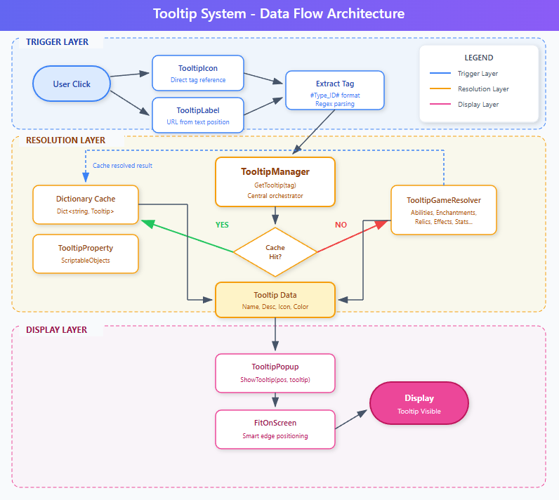
Game Properties
The game property tool is a tool I worked on to help developers to easily get an overview of the properties in the game. It provides a unified interface for viewing, searching, and editing the properties and seeing which properties are connected to each other.
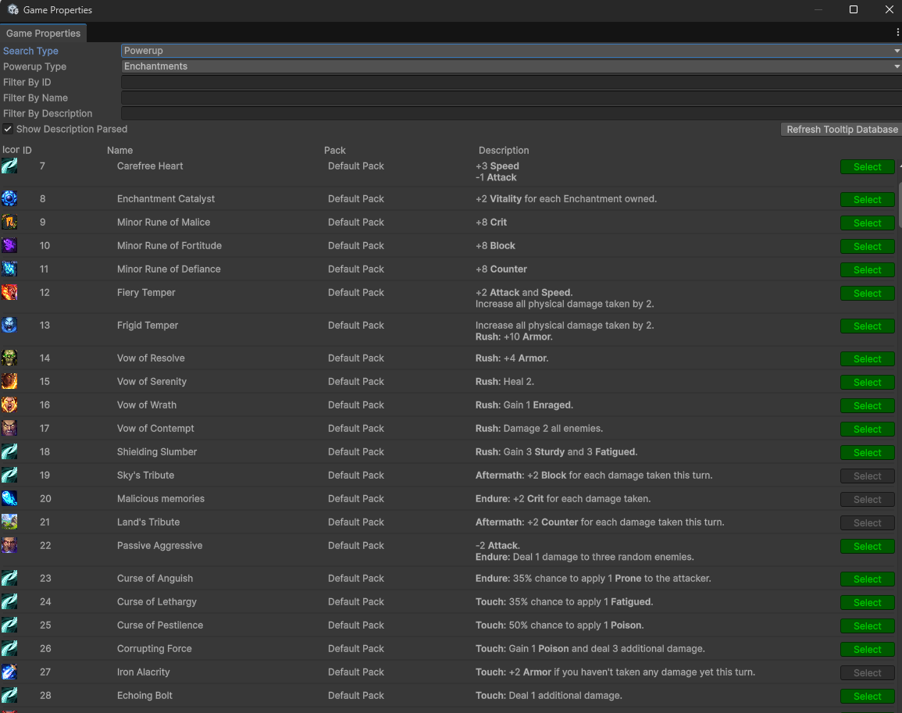
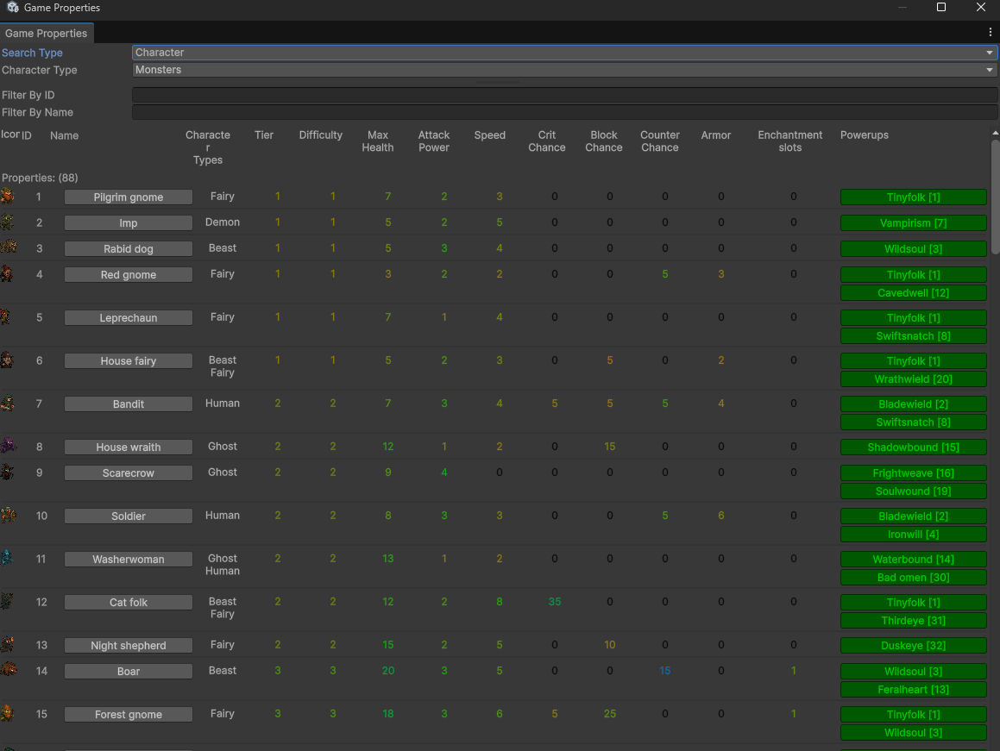
Overarching Property System
- Toggle between "Powerup" (abilities, enchantments, etc) and "Character" (monsters, bosses, companions, etc).
- Searchable by ID, name, or description.
- Real time filtering across 600+ properties.
- Easily select and find the property in the editor.
Powerup Visualization
- Icon preview with rarity color-coding.
- Availability status tracking (Available/Complete/Incomplete).
- Pack categorization.
- Live description preview with resolved tooltip references.
- Missing icon warnings.
Character Visualization
- Stat table with color heat-mapping (orange → green → blue gradient).
- Avatar icons with status indicators.
- Character-specific fields: Tier, Difficulty, Enchantment slots (Monsters), Rarity (Companions), Face portraits (Bosses).
- Clickable associated powerups list.
Areas worth highlighting
- Bidirectional Asset Caching - Static dictionaries indexed by directory and TypeID.
- Asset Unlinking Pattern - Converts direct sprite references to resource paths, reducing deployment dependencies.
- Extensible Validation - Error checkers register custom logic with auto fix capabilities.
- Tooltip Integration - Integrates with the tooltip database to parse descriptions in real time. Resolved references render in a calculated darker shade of the current GUI color. Missing tooltips are immediately visible with a red error message.
Codex
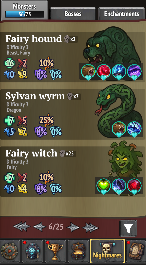
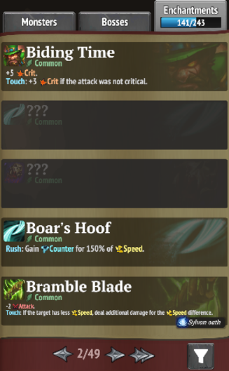
The Codex serves as both an encyclopedia and collection tracker, that the player can access in between runs. Monsters, bosses, and enchantments start hidden and are progressively revealed as players encounter them. This turns each discovery into a permanent unlock that exposes the entity's stats, abilities, etc.
Implementation
The Codex required building setting up UI using NGUI, including tabbed navigation, paginated grids, and a filter panel. Each entry type (Monster, Boss, Enchantment) has its own prefab and display class, inheriting from a shared base that handles common functionality like hiding undiscovered content and subscribing to state change events.
On the data side, the UserDiscoveries manager tracks discovery state and encounter counts. The UI pulls entity data from the database (monsters, bosses, enchantments) and joins it with the player's discovery records to determine what to reveal.
Discovery triggers are integrated into the gameplay loop. Whenever the player encounters an entity part of the codex for the first time, the discovery state is updated which updates the Codex. The system also connects to the achievement framework, firing events when discovery milestones are reached, making implementing claimable rewards possible.
Discovery Flow Diagram
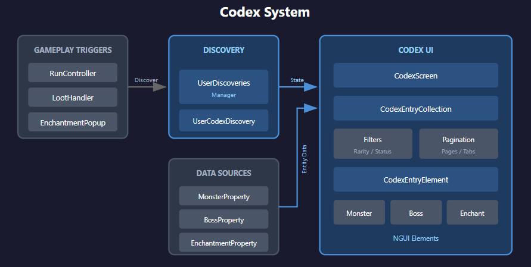
Areas worth highlighting
- Event Driven UI Updates - Exposes OnStateChanged event that UI elements subscribe to. When a discovery is triggered, all displayed entries for that entity update automatically without screen refresh. Proper cleanup in OnDestroy prevents memory leaks.
- Mutually Exclusive Filter Groups - Rarity filters are treated as a radio group, selecting one automatically deselects others. A OnFilterChanged handler detects rarity filters and clears the entire group before applying the new selection.
- Initialization with Caching - Codex Entry Collection instances are created once per section and cached. Property data is joined with user discovery data via factory methods that perform the join on first access only.
- Per Section Page State - Dictionary maintains independent page positions for each tab. Switching tabs remembers where you were.
Pantheon
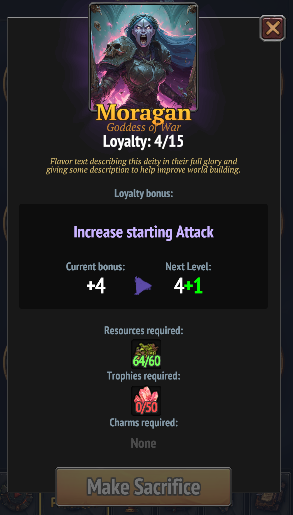
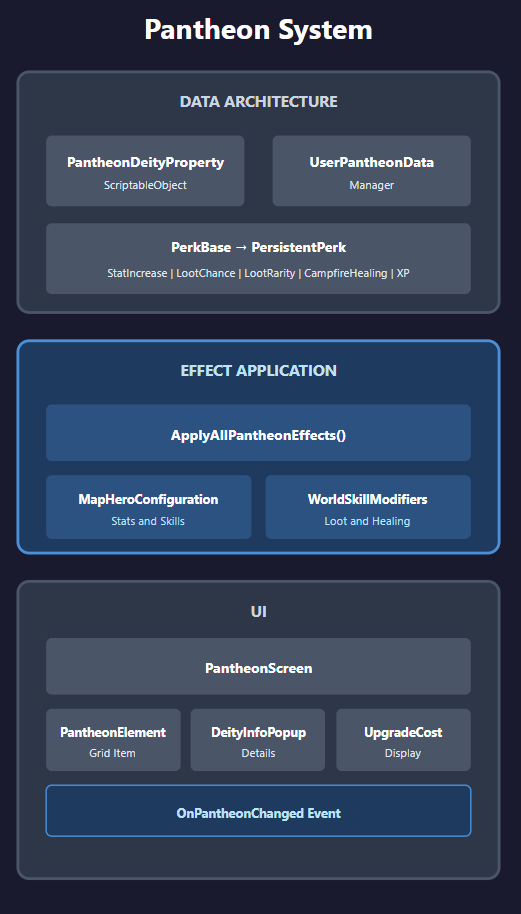
The pantheon feature is a meta progression system that allows the player to spend the gathered resources in the world to deities, in between runs. The deity upgrades will boost stats for the up and coming runs. Each deity gives different bonuses and requires different resources to upgrade.
The system mainly consists of three parts: the Pantheon database, the applying of the effects of the pantheon, and setting up the UI.
Data Architecture
The pantheon data is defined through Scriptable Objects that define each deity's identity, perk type, and upgrade costs per level. A UserPantheonData manager tracks the player's upgrade progress and handles the upgrade, validating affordability, subtracting resources, and persisting the new level.
Effect Application
At the start of each run the effect of all the upgraded deities are applied into the hero configuration. The system uses a polymorphic perk architecture. A PerkBase factory creates typed PersistentPerk instances (StatIncreasePerk, LootChanceIncreasePerk, etc.) that are filtered and summed by type using LINQ.
UI
The UI displays all nine deities in a grid, with each PantheonElement showing the current level and a progress bar toward the next upgrade. Selecting a deity reveals its portrait, description, current/next bonus values, and upgrade cost. The screen subscribes to OnPantheonChanged for real time updates when upgrades occur.
Technical Highlights
- Scalability - The decoupled data approach allows designers to add new deities or balance costs without touching the core logic.
- Factory Pattern for Perks - PerkBase.CreateRuntimeData() switches on PerkType enum to instantiate the correct perk subclass. Each perk type carries its own data (StatType for stat perks, LootType for loot perks) and accumulates values via AddValue().
- LINQ-Based Bonus Aggregation - Calculating total bonuses uses type filtering and projection, keeping the aggregation logic concise and type-safe.
- Localization Integration - Deity names, descriptions, and benefit text are pulled from localization sheets on load via SyncWithLocalization(), using a {SheetName}/{Field}/{ID} key pattern.
- Observer Pattern - The UI subscribes to an OnPantheonChanged event, ensuring the display updates instantly when an upgrade is purchased without requiring a menu reload.
Minimap
The Minimap feature is an interactive popup that the player can access when navigating the world. It displays an overview of the current level with a fog of war system to distinguish between tiles discovered in the current run, previous runs, and completely unexplored areas.
The Minimap consists of two main parts: The map generator and the interactive UI popup.
The map is generated by creating a texture matching the level dimensions, calculating one pixel per tile. Each tile is looked up for its terrain type, which maps to a color from a configurable dictionary. Roads and rivers override the base terrain color when present. The pixel array is then processed for fog of war, revealed tiles keep their color, previously discovered tiles are darkened and desaturated, and unexplored tiles are blacked out.
The UI popup, other than displaying the map, provides zoom controls via pinching and panning by dragging. Sprite markers indicate the player's current position and the level's starting location, scaling appropriately with zoom level.
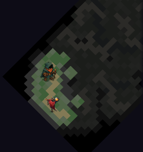
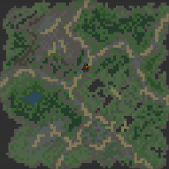
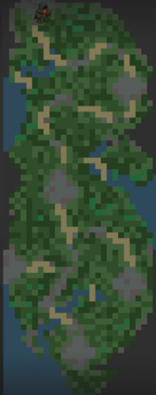
Technical Highlights
- Focal Point Zoom - Zoom maintains the screen point under the cursor/finger. The algorithm calculates the focal point's position in texture space, applies the zoom ratio, then adjusts the pan offset to keep that point stationary.
- Caching - The texture, base pixels, zoom calculations, and widget dimensions are all cached. All cached values use nullable types with null-check guards, and clearing cache destroys the texture to prevent memory leaks.
- Isometric perspective - The system supports isometric perspective for the relevant maps. This is achieved by rotating the texture 45-degrees, to match the corresponding map.
- Bidirectional Scroll Bar Sync - Scroll bars both reflect and control pan position. This makes the user see how far they can pan relative to the zoom level.
Reflection & Learnings
Studio Culture
My eight months at FunRock were incredibly rewarding. I quickly realized that a developer's productivity is deeply tied to their environment. Being surrounded by supportive colleagues and maintaining a proactive, positive mindset significantly increased the quality of my output. I learned that when you feel you truly belong in a team, you are much more driven to contribute your best work.
Pre Production & Feedback
Something that was new for me was the introduction of Tech Reviews before starting to work on a task. To discussing logic with senior developers before any work provided fresh perspectives and helped catch potential roadblocks early. I also found it useful to discuss pros and cons for different implementations, since it naturally brings areas that you might've missed with a specific solution. This habit of mental prototyping has stayed with me when working individually aswell, I now take the time to reflect on and compare multiple solutions before I begin implementation. This experience, combined with a code review merge request loop, developed my eye for details and to always be open to feedback and iterative improvement.
Technical Growth
Working at FunRock allowed me to significantly refine my skills within the Unity ecosystem. I also got to learn working and get comfortable with NGUI, a framework that was completely new to me. I've equally gotten more used to navigating large scale projects and getting used to thinking a lot about long term scalability.
Since FunRock structures their code in a modular way and reuse the code for multiple projects, this have improved my ability to write systems generic and then apply a game specific layer on top. I also gained a better understanding of mobile optimization, learning to balance complex UI systems and dynamic features while keeping a close eye on performance constraints and draw calls.